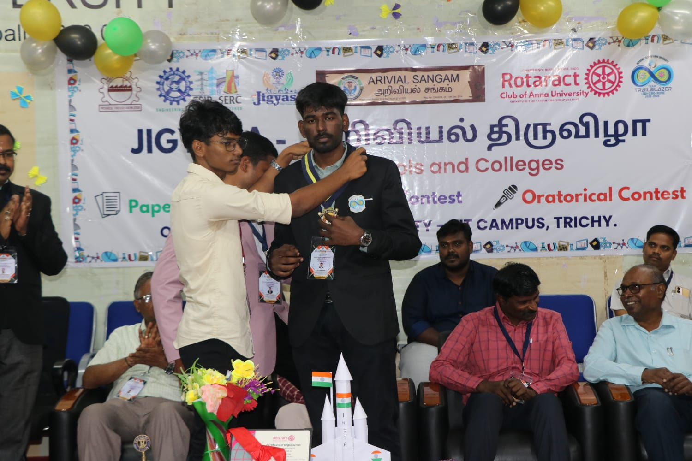
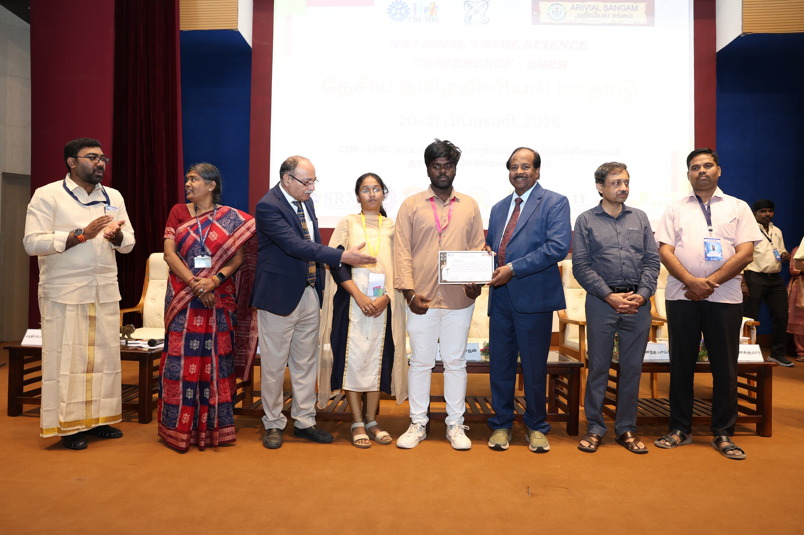
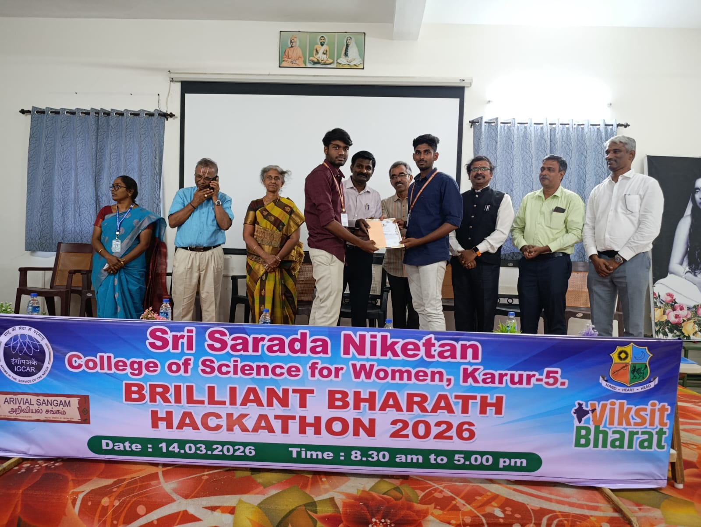

Join us at our events and be part of the change.
The start of a long journey
Anna University Auditorium
The event organized to promote the leadership qualities of the students.
Anna University Auditorium
The event that is organized to admire the presence of science.
Anna University Auditorium
A National Level Tamil Science Conference conducted along with the Ariviyal Sangam of Tamil Nadu
Yet to be Announced

January 2026 • 500 Participants

February 2026 • 750 Attendees

March 2026 • 250 Attendees